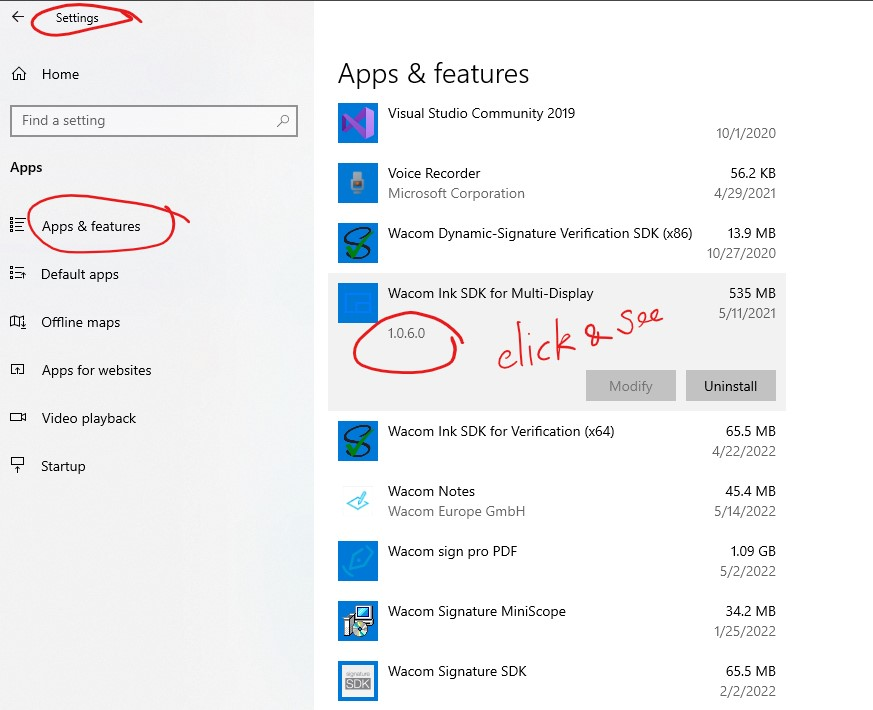

How to check version of Wacom's SDK installed
Go to Settings/Apps/Apps & Features
Scroll to Apps that you are interested in, click on it
Try on Wacom Signature SDK, Wacom Ink SDK for Multi-Display , etc.
